Ofunato
Ofunato · Iwate
Ofunato
Highlighted on the Iwate map.
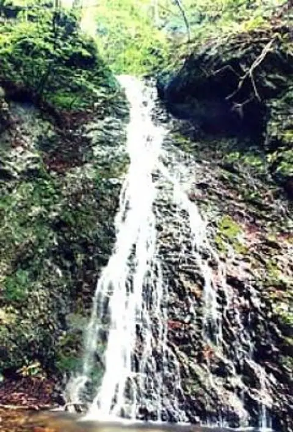
Stay
大船渡温泉
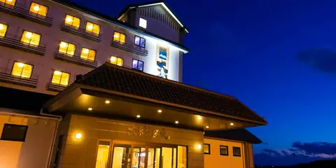
Oofunato Onsen
Onsen lodging in Ofunato, Iwate.
つつみ旅館
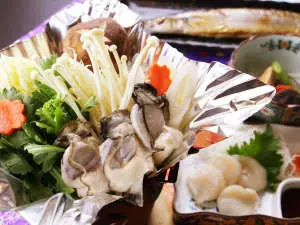
Tsutsumi Ryokan
Ryokan inn in Ofunato, Iwate.
旅館 菊水館
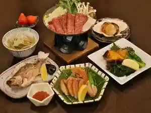
Ryokan Kikusui Kan
Ryokan inn in Ofunato, Iwate.
シティホテル山口
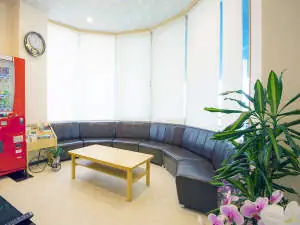
Shiteihoteru Yamaguchi
Hotel in Ofunato, Iwate.
ホテル福富
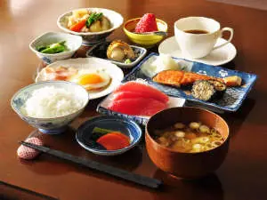
Hoteru Fukutomi
Hotel in Ofunato, Iwate.
大船渡インター ホテル椿
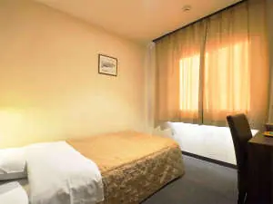
Oofunato Intaa Hoteru Tsubaki
Hotel in Ofunato, Iwate.
漁師めしがうまい！ 朝日を望む絶景露天温泉の宿 大船渡温泉
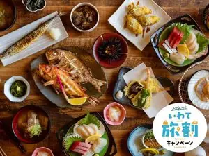
Ryoushi Meshigaumai ! Asahi Wo Nozomu Zekkei Roten Onsen No Yado Oofunato Onsen
Onsen lodging in Ofunato, Iwate.
海鮮の宿ごいし荘別邸 海さんぽ
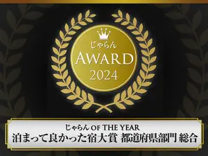
Kaisen No Yado Goishi Sou Bettei Umi Sanpo
Lodge in Ofunato, Iwate.
Dining
THE BURGER HEARTS
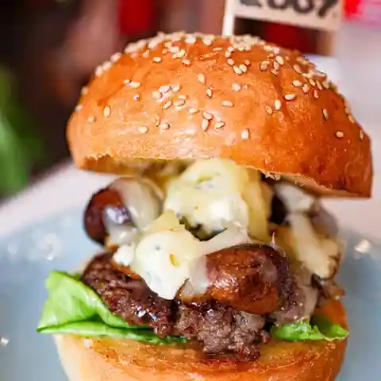
The Burger Hearts
Burger shop in Ofunato, Iwate.
ポルコ・ロッソ
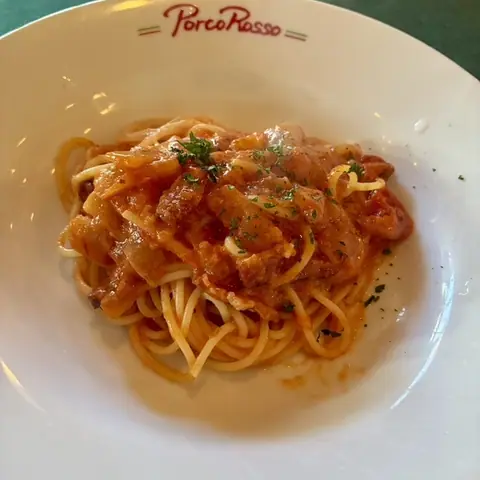
Poruko Rosso
Italian restaurant in Ofunato, Iwate.
黒船
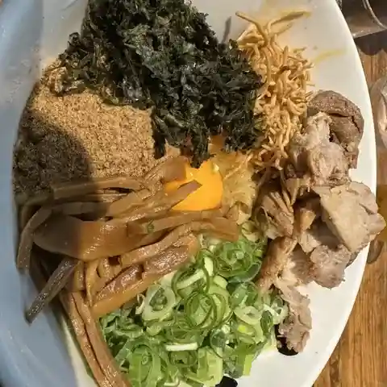
Kurofune
Ramen shop in Ofunato, Iwate.
かもめテラス 三陸菓匠さいとう 総本店
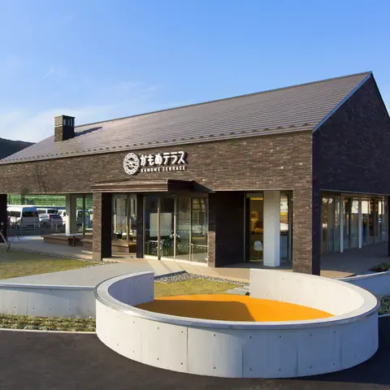
Kamome Terasu Sanriku Kashou Saitou Souhonten
Café in Ofunato, Iwate.
貝だしラーメン黒船 SECOND
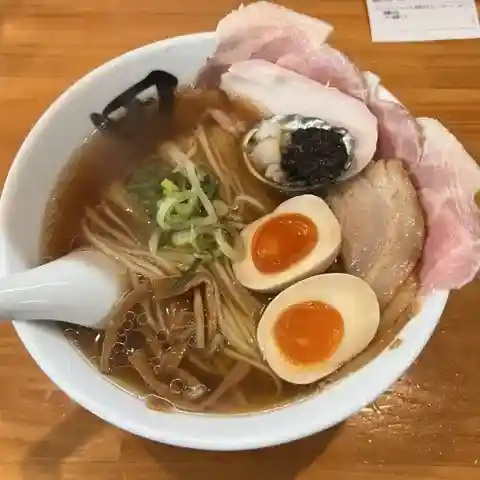
Kai Dashi Raamen Kurofune Second
Ramen shop in Ofunato, Iwate.
海の幸ふるまいセンター
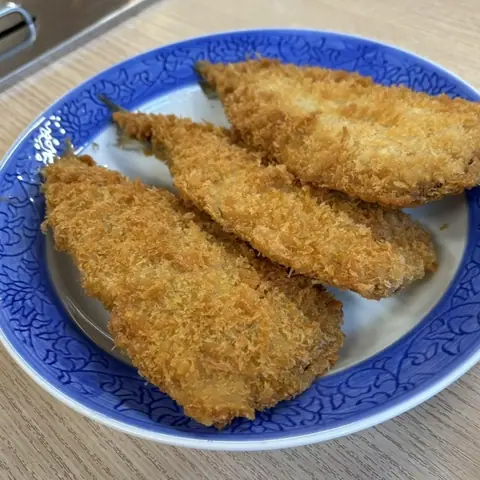
Umi No Sachi Furumai Sentaa
Japanese restaurant in Ofunato, Iwate.
百樹屋
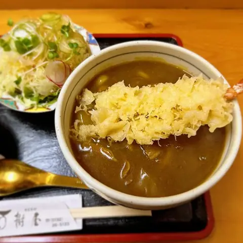
Hyaku Ki Ya
Shokudo diner in Ofunato, Iwate.
鮨処ささき
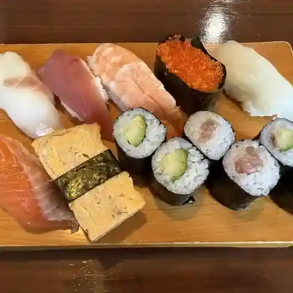
Sushi Shosa Saki
Sushi restaurant in Ofunato, Iwate.
大衆食堂まるふく
Taishuushokudou Marufuku
Shokudo diner in Ofunato, Iwate.
丸清食堂
Maru Kiyoshi Shokudou
Seafood restaurant in Ofunato, Iwate.
四季旬彩 中村
Shiki Jun Sai Nakamura
Izakaya in Ofunato, Iwate.
鰣不知
Chi
Izakaya in Ofunato, Iwate.
道の駅 さんりく
Michi No Eki Sanriku
Roadside-station eatery in Ofunato, Iwate.
岬
Misaki
Ramen shop in Ofunato, Iwate.
ガガニコ食堂
Gaganiko Shokudou
Seafood restaurant in Ofunato, Iwate.
千秋庵
Senshuu Iori
Soba restaurant in Ofunato, Iwate.
浜どこ
Hama Doko
Shokudo diner in Ofunato, Iwate.
呑み食い処 かぁさん
Nomi Kui Tokoro Kaasan
Izakaya in Ofunato, Iwate.
龍華
Ryuuge
Chinese restaurant in Ofunato, Iwate.
ルポゼ
Rupoze
Café in Ofunato, Iwate.
オオフナトのケムリ
Oofunato No Kemuri
Izakaya in Ofunato, Iwate.
Sights
Farmhouse Restaurant Ajidokoro Yasumiishi
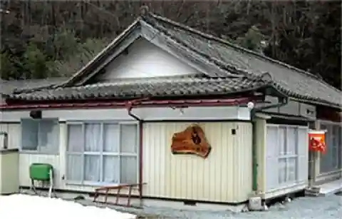
In a room with a hearth that has been renovated from an old folk house, we serve home-cooked meals made with local grains and wild vegetables.
Umi no Sachi Furumai Center
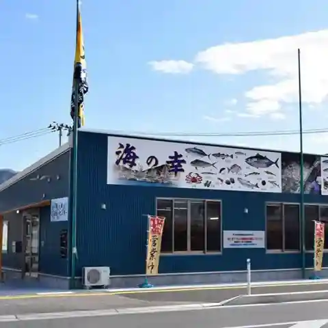
You can purchase fresh seafood delivered every morning.
Ofunato Sanma Ramen
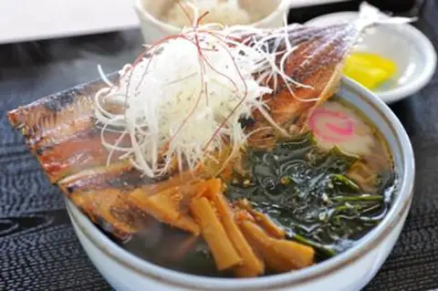
Ofunato Sanma Ramen is a hearty dish unique to Ofunato, which boasts one of the largest catches of saury in the country.
Sanriku Wakame
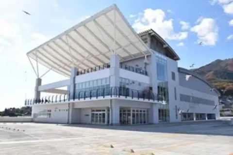
The finest wakame seaweed is carefully sourced and collected.
Kippin Abalone
Yoshihama dried abalone (Kippin abalone) is a high-quality dried abalone created and preserved by the climate and fishermen of Sanriku Yoshihama.
Eisaku Candy
Nostalgic candy. This unique candy has a soft texture and is enjoyed by everyone from the elderly to children.
Kamome no Tamago (Seagull Egg Sweets)
Castella dough and white chocolate are coated with a fluffy yellow bean paste made by mixing large beans, sugar (white charcoal), flour, egg yolk, etc.
Kamome Terrace
Saito Seika, which manufactures and sells Sanriku's famous confectionery "Kamome no Tamago," has opened a new store, "Kamome Terrace." In addition to selling Japanese and Western sweets, you can also watch the sweets manufacturing process and make your own…
Suisen Local Sake
A sake brewery in Rikuzentakata City. We brew sake and shochu, so you can enjoy seasonal drinks.
Suneka of Yoshihama
A small New Year's ritual held on January 15th every year.
Koishihama Scallop Deck
Koishihama Scallop Deck opened in the summer of 2015.
Koishihama Scallops
Koishihama scallops are scallops grown on the rich nutrients of Sanriku, one of the world's three major fishing grounds, and the mountains.
Santetsu Crepes
As the name suggests, this "tiny crepe shop" is so cozy that you could easily walk past it.
Tsunami Stone
Earthquake Related History and Heritage Facilities
Sanriku Railway Koishihama Station
Koishihama Station is a Sanriku Railway station located in Sanriku-cho, Ofunato City, and was renamed from Koishihama Station to "Koishihama Station" in 2009.
Goishi Kaigan Campsite
Located on the Goishi Coast in Sanriku Fukko National Park,
Goishi Lavender Garden
Lavenders are planted near "Goishi Beach," a representative scenic spot on the Sanriku Coast.
Goishi Coast Adventure
A 40-minute boat ride on a kakko boat (small boat) operated by a fisherman on the dynamic and varied Goishi Coast.
Fudo Falls
Fudo Falls, which seems to break the silence of the surrounding area, is called Otaki Falls on the right side and Onna Falls on the left side, and Fudoson, one of the five great kings, is enshrined next to it.
Mt. Goyo
A mountain with an altitude of 1,351m and semi-plain terrain.